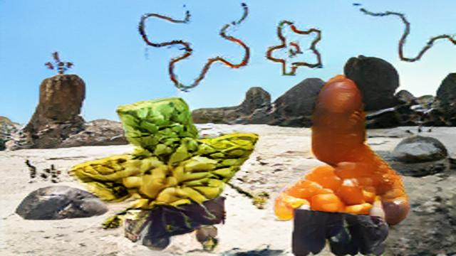
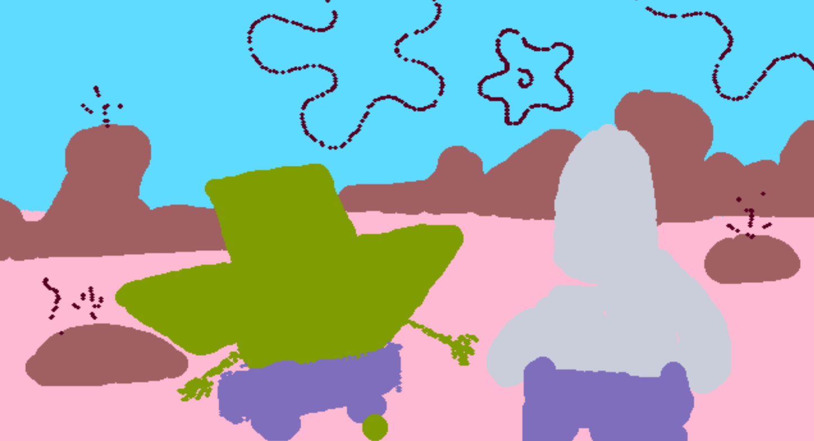
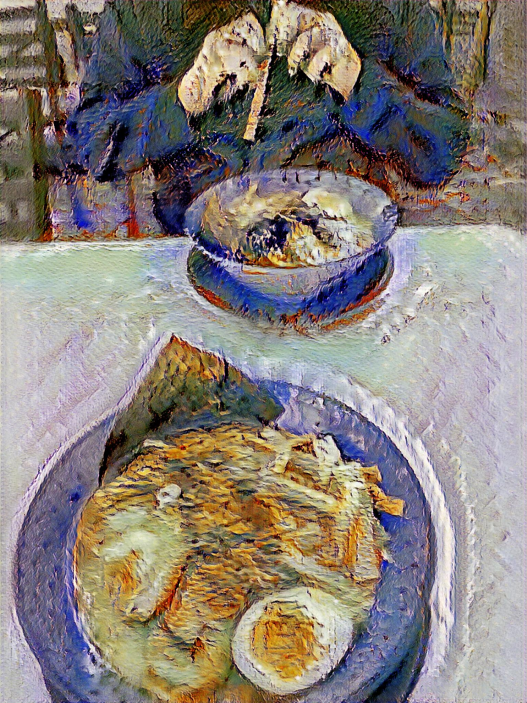
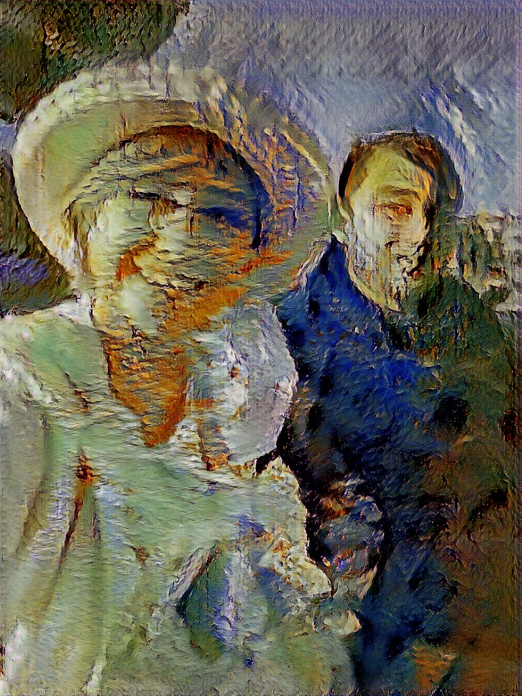
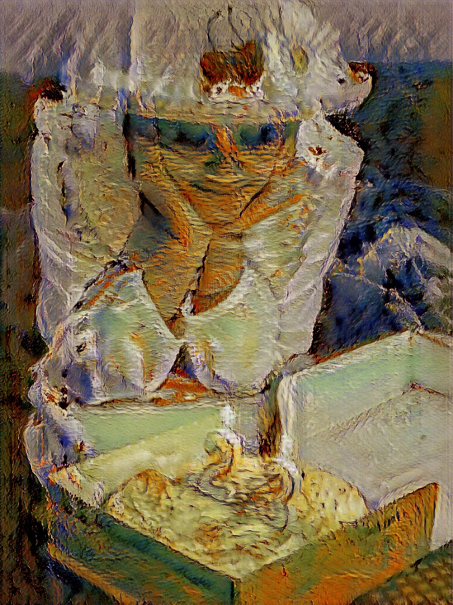

Glitch Art





The project was to use a website called runawayML, and it basically generates picture depending on which tools we used.
The first two pictures is the Spongebob Squarepants Texas Scene and I thought it would be funny to recreate the scene using SPADE COCO.
It is a bit harder to look but easier to identify the characters.
The third to the last picture is a picture of me and my significant other at SF Japan Town so it represents a new chapter in life and growth.
I used a STYLE GAN2 or AdaIN-STYLE for this one.